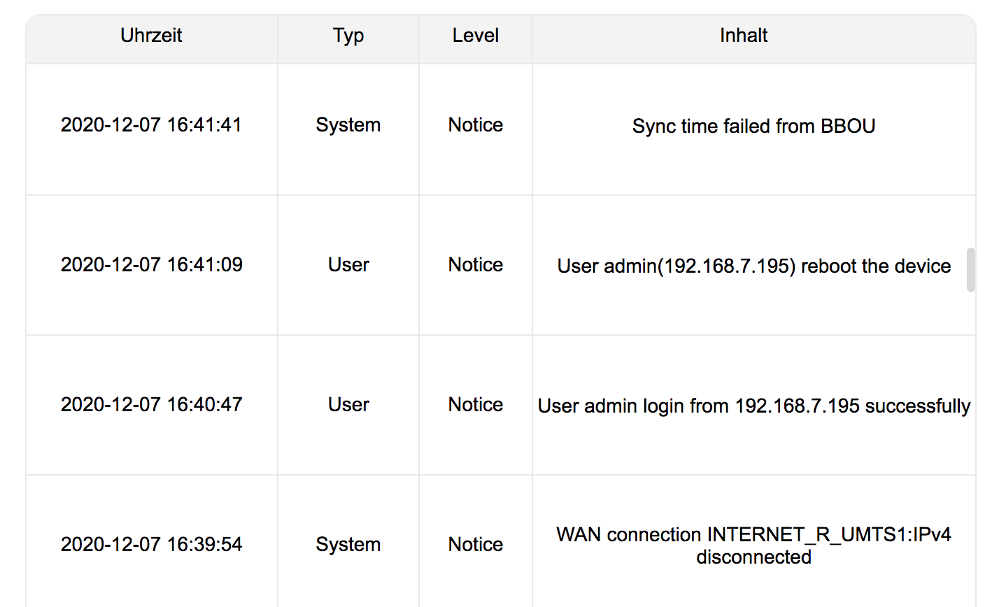
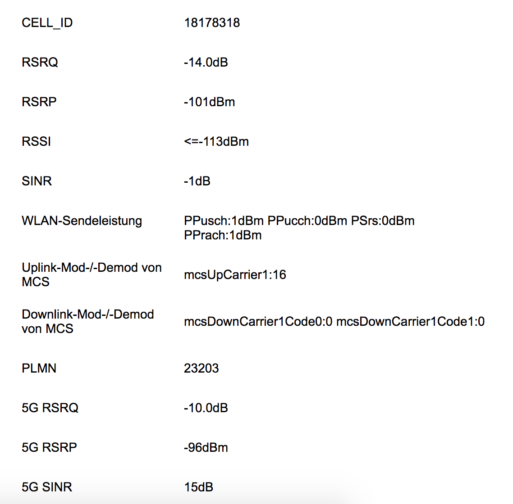
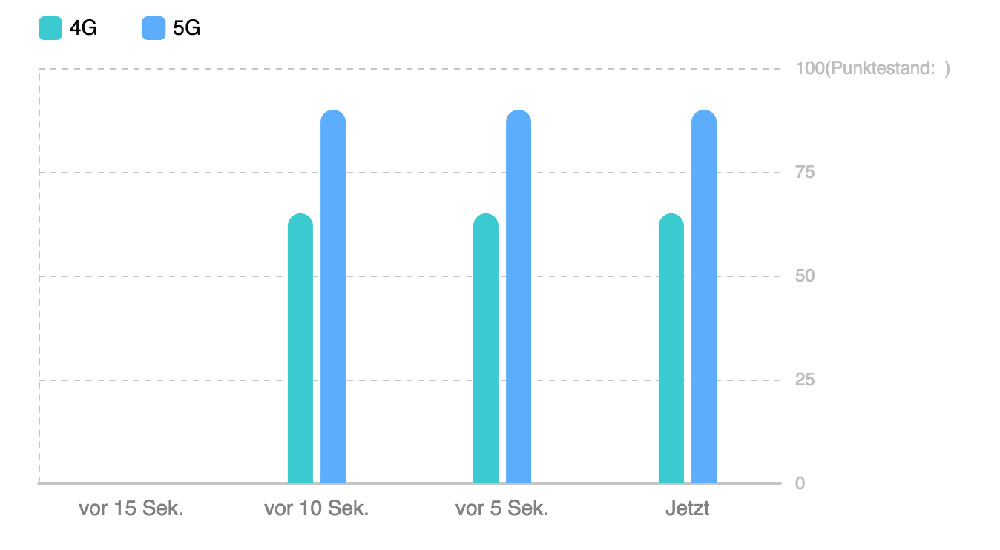
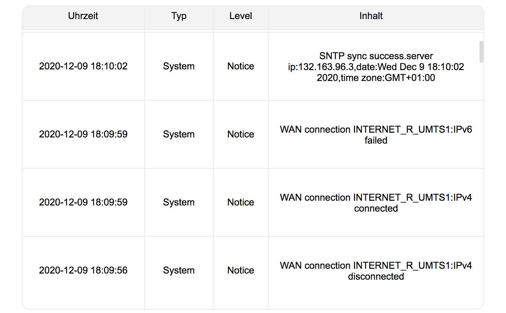

Hallo zusammen,
ich hab vor kurzem von einem 4G-Vertrag auf den 5G Vertrag gigakraft 250 mit dem Huawei CPE 5G Box Pro2 Router gewechselt.
Mit meinem bisherigen Huawei-Router (schwarze Würfel) hatte ich bisher nie Probleme und vor allem nie Disconnects.
Der Huawei CPE 5G Box Pro2 verliert täglich mindestens ein mal die Verbindung und verbindet sich aber auch nicht automatisch neu!
Jedes mal ist ein manuelles Neustarten des Routers notwendig. In der Weboberfläche sieht man das keine Verbindung zum Mobilfunknetz bestehet, sowohl 4G als auch 5G, und beide Kontrollleuchten sind ausgeschalten.
Kennt von euch jemand das Problem? Ich verstehe nicht wieso der Router nicht versucht automatisch wieder neu zu verbinden.
Gibt es irgendwo ein Setting für automatischen reconnect? Ich hätte ich nichts gefunden.
Anbei noch Infos zu aktuellen Sendewerten. Sind die in Ordnung?
Ein Auszug aus dem Router-Log. Jedes mal die selbe Fehlermeldung: "WAN connection INTERNET_R_UMTS1:IPv4 disconnected"
APN verwende ich den Standard t-homenet.
Danke euch!
LG



On 12/7/2020 at 8:12 PM, 77mn77 said:
Der Huawei CPE 5G Box Pro2 verliert täglich mindestens ein mal die Verbindung und verbindet sich aber auch nicht automatisch neu!
Das passsiert immer zu selben Zeit oder?
Grundsätzlich sollte er sich schon automatisch wieder einwählen, das wäre schon komisch ...
vor 11 Stunden schrieb MarioM:
Das passsiert immer zu selben Zeit oder?
Grundsätzlich sollte er sich schon automatisch wieder einwählen, das wäre schon komisch ...
Nein, ein automatischer Re-connect ist es leider nicht, da es immer wieder zu unterschiedlichen Zeiten passiert.
Wie sehen denn die Logzeilen im Router bei einem automatischen Re-connect aus.
Ich habe kurz vorm Verbindungsverlust auch ein mechanisches Klacken aus dem Router gehört?! Wie wenn etwas umschalten würde. Wäre mir bei einem Router noch nie untergekommen... Kennt das jemand?

Jetzt war das Problem seit ein paar Tagen schon nicht mehr.
p.s. ich denke ich habe einen automatisch re-connect gefunden. Derartige Einträge habe ich alleine heute 3 mal gefunden.

{kind=link}
{kind=link}
{kind=link}
{kind=link}